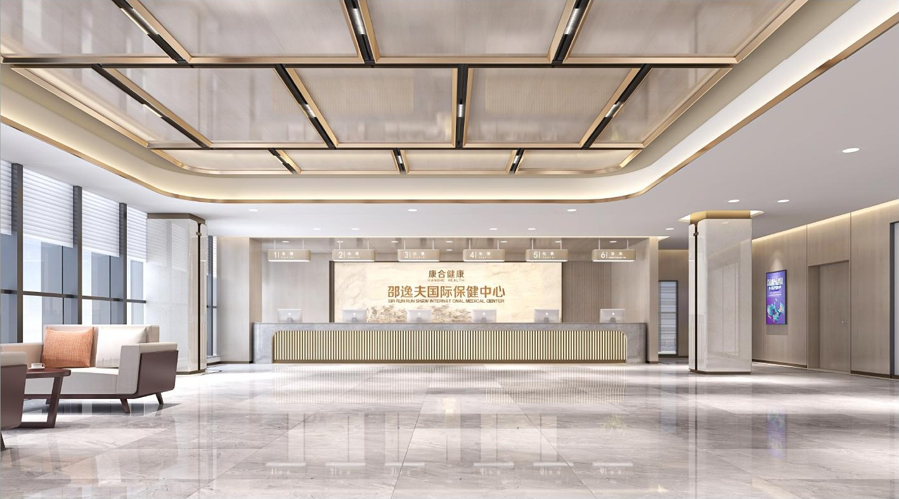
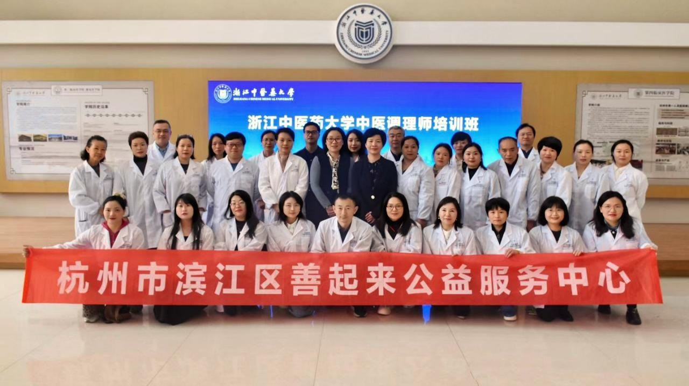

微生物与菌群应用资源
资料列示中国科学技术大学病原微生物学实验室、杭州氧森树菌群应用孵化中心，以及“中科国康 | 氧森树 共建实验室”等研究与应用方向。具体研究资源的合作范围及如何用于服务，需要专业评估与实际确认。
协作与行业合作
从资源到交付，从健康服务到行业连接，围绕具体人群与实际需求讨论合作。

资料介绍康合健康 / 邵逸夫国际保健中心的体检、门诊、内镜、VIP 与影像等资源，展示 8,000 余平方米的相关功能空间，涉及高端体检、重大疾病就医协调、国际医疗、功能医学检测、健康管理及康养旅游。
这是项目资料所介绍的相关机构资源，具体资源关系与服务范围需按实际项目确认，建筑与空间不作为森森自有设施展示。

资料列示中国科学技术大学病原微生物学实验室、杭州氧森树菌群应用孵化中心，以及“中科国康 | 氧森树 共建实验室”等研究与应用方向。具体研究资源的合作范围及如何用于服务，需要专业评估与实际确认。
资料展示中医调理师实训基地与“万人培育工程”方向，强调专业服务人员的培养、学习与实操。该名称表示培养方向，资料未提供已培训人数与森森主体的项目清单。
相关图片与名称保留原主体，不作为森森自建实验室、机构背书或已完成培养成果的证明。
围绕员工、高管及家庭关爱等需求，讨论健康咨询、报告解读、健康管理与就医协助的组合，让服务与实际人群相匹配。
针对金融与保险相关客户的健康关注，讨论会员权益、专业咨询和就医协助等合作方向，明确服务边界与交付条件。
面向健康管理和体检相关机构，探索报告解读、健康档案与日常管理支持的衔接，讨论 AI 信息整理和服务协作方式。
项目资料将电动车行业列为平台拓展场景之一。可从用户日常活动与健康关注出发，讨论健康教育、服务权益及技术连接方向，先核实需求与实现条件。
明确人群、场景与希望解决的问题。
核实可用资源、专业资质、服务与技术条件。
围绕实际需求讨论会员权益、咨询、管理与协助配置。
确认授权、流程、履约与沟通方式。
这些场景是可讨论的合作方向。接口开放、数据接入与项目实施情况须另行确认。